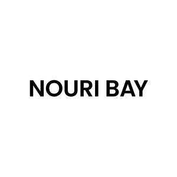

Trade Mark Journal No.2025/048 28 November 2025
UK00004293108 11 November 2025 (3,5,18,25,35)

- Class 3
- Non-medicated skincare preparations; face mist; serums; facial oils; moisturisers; cleansers; toners; body lotions; soaps; scrubs; face masks; toners; eye creams; lip balms; lip oils; exfoliants; essential oils; shampoos; conditioners; hair masks; hair oils; hair serums; leave-in treatments; hair sprays; scalp oils; scalp treatments; anti-dandruff treatments; natural cosmetics; balms; Skincare cosmetics; Anti-aging skincare preparations; Anti-aging moisturizers used as cosmetics; Skincare preparations; Moisturisers [cosmetics]; Skin moisturizers used as cosmetics; Anti-aging moisturizers; Anti-ageing moisturiser; Suncare lotions [for cosmetic use]; Cosmetic moisturisers; Anti-ageing creams [for cosmetic use]; Cosmetic products in the form of aerosols for skincare; Anti-aging creams [for cosmetic use]; Moisturising skin lotions [cosmetic]; Beauty serums; Acne cleansers, cosmetic; Non-medicated skincare preparations; Facial moisturisers [cosmetic]; Skin cleansers [cosmetic]; Moisturising skin creams [cosmetic]; Suncare lotions; Beauty serums with anti-ageing properties; Facial creams [cosmetics]; Anti-aging creams; Anti-ageing creams; Anti-ageing serums for cosmetic purposes; Skin moisturisers; After-sun oils [cosmetics]; Skin care lotions [cosmetic]; Skin care cosmetics; Beauty lotions; Skin moisturizer; Skin moisturizers; Skin moisturiser; Skin balms [cosmetic]; Beauty care cosmetics; After-sun lotions [for cosmetic use]; Moisturisers; Skin care creams [cosmetic]; Cosmetic creams for skin care; Skin recovery creams [cosmetics]; Cosmetic creams for the skin; Skin creams [cosmetic]; Skin creams [for cosmetic use]; Sunscreen creams [for cosmetic use]; Facial cleansers [cosmetic]; Anti-wrinkle creams [for cosmetic use]; Cosmetics; Cosmetic nourishing creams; Skin cleansers; Skin masks [cosmetics]; Moisturiser; Cleansing creams [cosmetic]; Moisturizers; Skin moisturizer masks; Anti-ageing serum; Hairstyling serums; Cosmetic facial lotions; Facial lotions [cosmetic]; Non-medicated skin serums; Exfoliants for the care of the skin; Body and facial creams [cosmetics]; Cosmetic creams and lotions; Skin care oils [cosmetic]; Exfoliants for the cleansing of the skin; Facial moisturizers; Anti-aging serum for cosmetic use; Beauty creams; Moisturising body lotion [cosmetic]; Beauty balm creams; Skin lotions; Lotions for the skin; Skin fresheners [cosmetics]; Hair care lotions [for cosmetic use]; Sunscreens [for cosmetic use]; Skin cleansing lotion; Cosmetic massage creams; After-sun milks [cosmetics]; Skin toners [cosmetic]; Body creams [cosmetics]; Sunscreen [for cosmetic use]; Hair care creams [for cosmetic use]; Cosmetic hair lotions; Facial creams [cosmetic]; Facial creams [for cosmetic use]; Sun care lotions [for cosmetic use]; Skin make-up; After-sun milk [cosmetics]; Suntan lotion [cosmetics]; Exfoliating creams; Skin cleansers [non-medicated]; Hair moisturisers; Moisturizing creams; Cosmetics for use in the treatment of wrinkled skin; Aromatherapy creams; Cosmetic products for the shower; Skin cream [for cosmetic use]; Creams (Cosmetic -); Cosmetic creams; Anti-aging cream; Skin lotion; Organic cosmetics; Night creams [cosmetics]; Skin hydrators; Cleansing lotions; Aromatherapy lotions; Skin hydrators for cosmetic purposes; Facial gels [cosmetics]; After-sun lotions; Anti-wrinkle creams; Beauty creams for body care; Facial cleansers; Exfoliant creams; Hair care serums; Self-tanning preparations [cosmetic]; Cosmetic products in the form of aerosols for skin care; Moisturising creams; Anti-wrinkle cream [for cosmetic use]; Cosmetic preparations for skin firming; Skin creams; Creams for the skin; Cosmetics for suntanning; Colour cosmetics for the skin; Moisturising gels [cosmetic]; Dermatological creams [other than medicated]; Hair moisturizers; Hydrating creams for cosmetic use; Facial lotions; Hair cosmetics; Toiletries.
- Class 5
- Pharmaceutical skin lotions; Moisturising creams [pharmaceutical]; Acne cleansers [pharmaceutical preparations]; Serums; Dermatological pharmaceutical products; Medicinal creams for skin care; Pharmaceutical products and preparations for hydrating the skin during pregnancy; Skin care lotions [medicated]; Acne creams [pharmaceutical preparations].
- Class 18
- Tote bags; Bags; Carry-all bags; Grocery tote bags; Drawstring bags; Toiletry bags; Cloth bags; Canvas bags; Toilet bags; Make-up bags; Makeup bags; Cosmetic bags.
- Class 25
- Clothing; Linen clothing.
- Class 35
- Online retail services relating to cosmetics; Online retail store services relating to cosmetic and beauty products.
Nouri Bay Limited